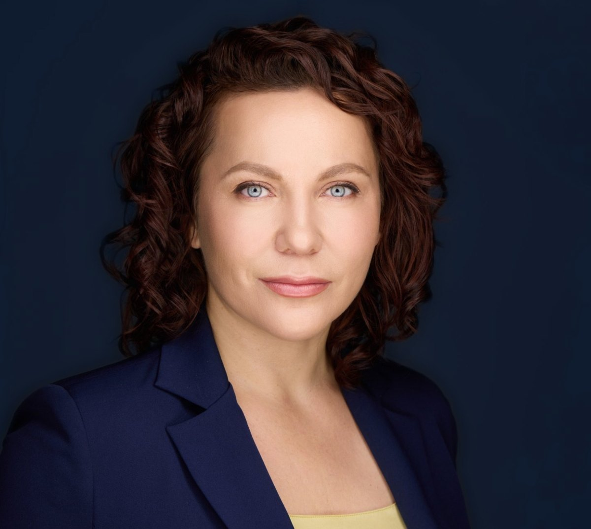

Organisational capability and performance
Translating strategic ambition into management systems that align goals, authority, accountability and incentives. Building the capabilities organisations need to launch, scale and transform.

Non-Executive DirectorHuman Capital & Organisational Development Adviser
Unlocking the future through people
20+ years in executive roles within major multinational groups, alongside board experience across public and private companies.
I help businesses identify and develop the human and organisational capabilities needed to realise market opportunities and product ambitions.
My perspective is shaped by living, working and studying across Europe and Asia.
Translating strategic ambition into management systems that align goals, authority, accountability and incentives. Building the capabilities organisations need to launch, scale and transform.
Helping businesses navigate rapid growth, expansion, restructuring and organisational crises. Evolving operating models and organisational design as companies enter new markets, diversify and outgrow established ways of managing.
Guiding cultural transitions through changes in ownership, leadership style, governance model, scale and business conditions. Helping businesses expand into different environments while preserving their distinctive strengths. Supporting diversified groups in combining a strong corporate centre with entrepreneurial freedom across business units, and adapting management practices as external changes demand new ways of working.
Developing balanced governance and management models suited to a company’s culture, ownership, maturity and challenges. Strengthening strategic judgement and the capacity to anticipate change and act decisively. Balancing central direction with business autonomy across holdings, ecosystems and diversified groups.
Building continuity in the leadership and critical expertise on which business success depends. Identifying pivotal roles, selecting and developing key executives, preparing successors and enabling generational transitions. Aligning executive performance and long-term incentives with a sustainable internal leadership pipeline and the company’s enduring interests.
Identifying opportunities, shaping product concepts and building the capabilities to develop them. Strengthening R&D and innovation management to turn ideas into viable offerings and new sources of business value. Supporting digitalisation and AI transformation, including how they reshape professions, workforce capabilities and business processes.
Senior executive roles within multinational groups employing tens of thousands of people and serving millions of customers worldwide. My responsibilities have spanned thousands of employees, human capital, strategic development and international operations.
Earlier roles within BNP Paribas, UniCredit and the Generali PPF insurance business included corporate education, post-merger integration, organisational transformation and new business development.
Experience includes launching and scaling business operations across Europe and Asia—from establishing international offices to developing operations employing thousands of people.
Experience across AI and internet platforms, software products, engineering and manufacturing, including businesses with proprietary R&D, products and production capabilities.
The scale ranges from international product start-ups to technology groups with workforces of approximately 85,000 people, with HR leadership in software engineering environments of 12,000. My own international organisational remit covered approximately 7,000 employees.
This work spans agile transformation, product-oriented management, digital management platforms, engineering culture and critical technical talent.
Drawing on extensive experience in software and digital businesses, I champion digital and AI transformation. I help companies identify emerging opportunities, adopt digital tools and AI agents, and rethink workflows and management practices to keep pace with technological change.
Board and advisory appointments since 2021 across public and private companies, including chairing remuneration and nominations committees, with board-level experience in IPO preparation and execution.
Teaching in public and private universities, MBA programmes and professional education settings. Bringing executive and board experience into learning on governance, organisational transformation, culture, leadership and strategy execution.
International Directors Programme — currently enrolled
Global Directorship Programme
Independent Director Programme — informed by the Institute of Directors (IoD, UK) Competency Framework
Organisational Psychology and Human Resource Management, with honours
I welcome board, advisory and executive education opportunities.